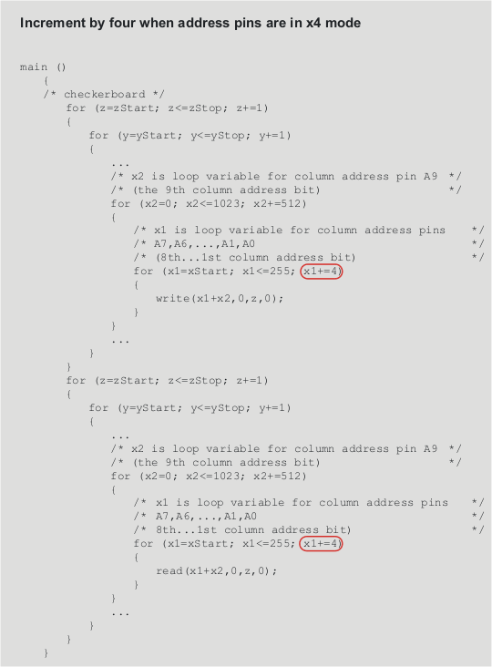

Setting up the x4 mode in the APG program file
Each access definition (write and read) is incremented by four in the example shown in the APG program file below because the address pins are set up in x4 mode.

Each access definition (write and read) is incremented by four in the example shown in the APG program file below because the address pins are set up in x4 mode.
